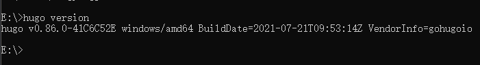

本文展示了如何使用 hugo 搭建博客。
1. 安装Hugo
目前我仅在Windows环境下安装过hugo，简要介绍下安装过程，其他方式可以参考官方文档 。
1.1 Windows环境下安装
-
下载hugo二进制文件，解压，将解压后的文件夹名称和文件夹里面的*.exe文件都改为同一个名称，否则hugo无法运行。
-
配置计算机的环境变量，右击计算机-属性-高级系统设置-高级-环境变量-系统变量，找到path，添加hugo路径。
-
在cmd中执行命令
hugo verison，进行验证是否安装正确，下图为正确安装情况。 
2. 建站
2.1 创建项目
进入需要创建站点的文件目录，在此目录打开cmd终端或者git bash终端。
1hugo new site site_name // site_name为需要创建的站点名称
然后hugo会自动生成名称为site_name的文件夹以及文件夹中的各种目录。
| 文件夹 | 说明 |
|---|---|
| archetypes | default.md为模板 |
| content | 放的是你写的markdown文章 |
| layouts | 网站的模板文件 |
| static | 图片、css、js等资源 |
| config.toml | 网站的配置文件 |
这样就建立了新的站点，但此时我们的新站点还需要安装主题。
2.2 安装主题
直接把这个主题克隆到theme目录，在站点根目录执行命令：
1git clone -b master git@github.com:vaga/hugo-theme-m10c.git themes/m10c
或者，初始化项目目录为git仓库，并且把主题仓库作为站点目录的子模块：
1git init
2git submodule add -b master git@github.com:vaga/hugo-theme-m10c.git themes/m10c
2.3 基础配置
在站点根目录config.toml文件中进行配置，填写使用的主题。
1baseURL = "http://example.org/"
2languageCode = "zh-CN" // 使用中文
3title = "Phares's blog" // 站点名称
4theme = "m10c" // 使用的主题
2.4 创建博客
创建第一篇文章
1hugo new post/first_blog.md
注意：在默认情况下，所有文章和页面均作为草稿创建。如果想要渲染这些页面，请从元数据删除属性draft: true，或者设置属性draft: false。
2.5 本地启动
1hugo server
也可在启动的时候应用主题：
1hugo server --theme=m10c --watch
参数说明：
1--theme 用于选择主题，如果在配置文件中设置了主题，则无需指定
2--buildDrafts 用于是否显示草稿文章
3--watch 用于实时监控变化，方便调试
启动后，可以访问http://localhost:1313/ 查看
2.6 构建网站
在项目根目录下直接使用 hugo 命令，会生成public目录，该目录下都是关于我们的markdown编译完成的html静态页面。博客安装好之后，就该进行部署了，可以部署到自己的网站，也可以部署到Git Page。